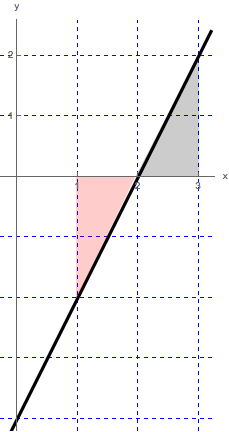
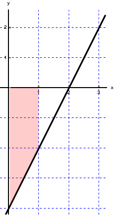

- (a)
- \(\int _1^3 (2x-4) \d x\)

We want to find the net area of the shaded region. We have two identical triangles, each with base \(1\) and height \(2\). Since the triangles will have identical area and one lies above and the other below the \(x\)-axis, the total area will be \(0\).
Therefore, \(\int _1^3 (2x-4) \d x=0\)
- (b)
- \(\int _1^3 |2x-4| \d x\)
The functions changes the sign at \(x=2\). Therefore, we will split the integral into two integrals:
\(\int _1^3 |2x-4| \d x=\int _1^2 |2x-4| \d x+\int _2^3 |2x-4| \d x\).
Since the function is negative for \(x<2\) and positive for \(x>2\), we write
\(\int _1^3 |2x-4| \d x=-\int _1^2 (2x-4) \d x+\int _2^3 (2x-4) \d x=1+1=2\).
- (c)
- \(\int _0^1 (2x-4) \d x\)

Here we need to find the area of a trapezoid. The trapezoid is made up of a rectangular top with area \((2)(1)=2\) and triangle bottom with area \((1/2)(1)(2)=1\). This gives us an area of \(3\), but, since \(f\) is negative on the interval \((0,1)\), the value of the integral is the negative of this area.
Therefore,\(\int _0^1 (2x-4) \d x=-3\)
- (d)
- \(\int _{-1}^3 \sqrt {4-(x-1)^2} \d x\)